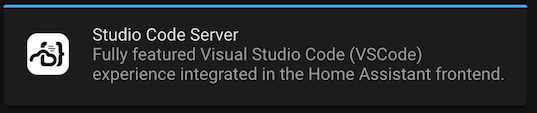
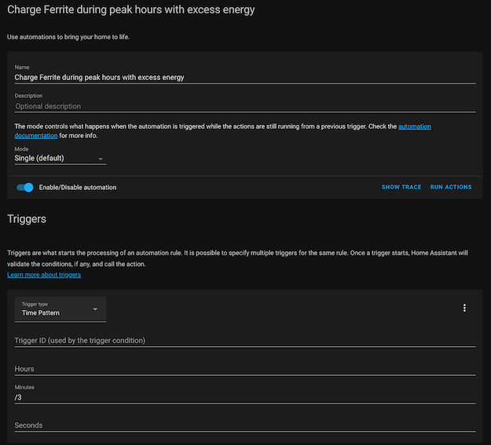
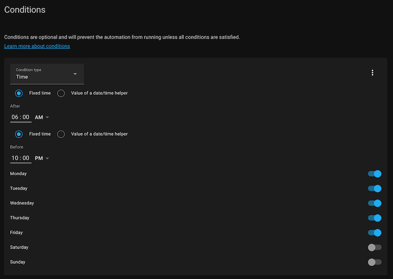
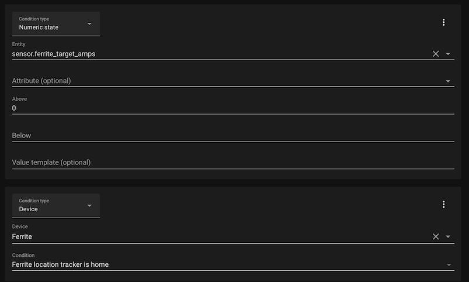
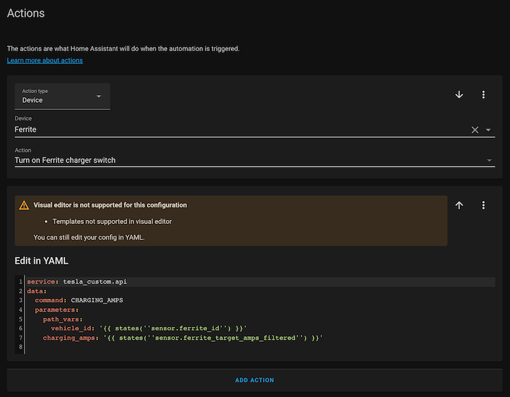

Automatisation
Les sources de données nécessaires pour l’optimisation sont maintenant en place, il est temps de passer à la configuration du comportement de charge désiré dans Home Assistant.
Visual Studio Code
La première étape est d’installer un éditeur. Se rendre sur Add-on Store et installer “Studio Code Server”.

Redémarrer si nécessaire. Un onglet Studio Code Server est maintenant disponible dans le menu à gauche et permet de naviguer entre les différents fichiers. La configuration principale se trouve dans configuration.yaml - qui lui-même inclus d’autres fichiers périphériques.
Senseurs
Il s’agit en premier lieu de définir des “senseurs” qui nous permettront de prendre des décisions.
Ajouter et modifier le code suivant dans configuration.yaml
sensor:
- platform: template
sensors:
total_power_usage:
value_template:
"{{ ((states.sensor.shellyem3_e8db84d72857_channel_a_power.state | float) +
(states.sensor.shellyem3_e8db84d72857_channel_b_power.state | float) +
states.sensor.shellyem3_e8db84d72857_channel_c_power.state | float) | round(1) }}"
friendly_name: "Total power usage"
unit_of_measurement: "W"
device_class: "power"
unique_id: "0e564a2b1013f7e3a77f74038077128c"
ferrite_target_amps:
friendly_name: "Ferrite amperage cible (instantane)"
unit_of_measurement: "A"
icon_template: "mdi:current-ac"
value_template: "{{ max((states('sensor.total_power_usage')|float - states('sensor.shellyem_98cdac1fb962_channel_2_power')|float) / -220, 0) }}"
unique_id: "0e564a2b1013f7e3a77f74038077128f"
device_class: "current"
ferrite_id:
friendly_name: "Ferrite API ID"
value_template: "{{ state_attr('binary_sensor.ferrite_online_sensor', 'id') }}"
unique_id: "0e564a2b1013f7e3a77f74038077128g"
- platform: filter
name: "Ferrite target amps (filtered)"
entity_id: sensor.ferrite_target_amps
filters:
- filter: time_simple_moving_average
window_size: "00:06"
precision: 0
Attention, les espaces sont significatifs en YAML, il faut toujours s’assurer du bon alignement des blocs.
total_power_usage
Cette valeur calculée est la consommation totale instantanée. Remplacer les identifiants des Shelly par les bons, par exemple shellyem3_e8db84d72857_channel_a_power comporte l’identifiant de mon Shelly 3EM personnel et ne fonctionnera pas directement. A noter que ces valeurs deviennent négatives en cas de retour dans le réseau.
ferrite_target_amps
Cette valeur est le calcul continu de l’ampérage désiré, en fonction de la valeur précédente et de l’injection solaire. Dans cette définition également, remplacer ferrite par le nom de votre Tesla et l’identifiant shellyem_98cdac1fb962_channel_2_power par le Shelly EM qui mesure la production solaire dans votre configuration.
ferrite_id
Cette valeur est nécessaire pour envoyer la commande de réglage de l’ampérage et est inférée d’un capteur présent avec l’intégration Tesla dont l’identifiant comporte le nom de la voiture. Adapter l’identifiant du senseur et la référence à ferrite_online_sensor au nom de votre Tesla.
ferrite_target_amps_filtered
Cette valeur est le résultat d’une moyenne glissante d’une durée de 6 minutes sur la valeur d’ampérage instantanée. Cela permet de lisser les variations, qui peuvent être bien sûr importantes suivant l’état du ciel et surtout la consommation domestique.
Se rendre ensuite sur Configuration -> Server Control et cliquer sur le bouton Check Configuration pour vérifier la syntaxe. Si la configuration est correcte, il reste à la recharger, soit en redémarrant complètement, soit en cliquant sur les boutons correspondants. Dans ce cas, il s’agit de Template Entities et Filter Entities. Les nouvelles entités devraient maintenant apparaître dans Configuration -> Entities.
Macros
Tout est maintenant en place pour définir les comportements d’optimisation. Ceci peut se faire visuellement dans Configuration -> Automation mais la configuration est dans tous les cas stockée dans le fichier automations.yaml
Charge en heures de plein tarif
Pour définir ce comportement, nous faisons à un script qui décrit l’allumage de la charge. Ajouter et modifier le bloc suivant à automations.yaml
- id: '1629898634868'
alias: Charge Ferrite during peak hours with excess energy
description: ''
trigger:
- platform: time_pattern
minutes: /3
condition:
- condition: time
after: 06:00:00
before: '22:00:00'
weekday:
- mon
- tue
- wed
- thu
- fri
- condition: numeric_state
entity_id: sensor.ferrite_target_amps
above: '0'
- condition: device
device_id: a0123921d8920a36c1d23f33c287dc83
domain: device_tracker
entity_id: device_tracker.ferrite_location_tracker
type: is_home
action:
- type: turn_on
device_id: a0123921d8920a36c1d23f33c287dc83
entity_id: switch.ferrite_charger_switch
domain: switch
- service: tesla_custom.api
data:
command: CHARGING_AMPS
parameters:
path_vars:
vehicle_id: '{{ states(''sensor.ferrite_id'') }}'
charging_amps: '{{ states(''sensor.ferrite_target_amps_filtered'') }}'
mode: single
Il est aussi possible de le reproduire dans l’éditeur visuel, voici à quoi cela ressemble:    
Remplacer toutes les mentions de ferrite et le device_id par le nom et identifiants de votre propre Tesla, sinon cela ne fonctionnera pas. Se référer à l’intégration Tesla pour trouver les identifiants dans votre propre installation. Il est aussi possible de reproduire la macro avec l’éditeur visuel pour que les valeurs correctes soient automatiquement utilisées.
Trigger
Ce bloc indique que la macro doit s’executer toutes les trois minutes (ceci peut être modifié)
trigger:
- platform: time_pattern
minutes: /3
Horaire
Ce bloc définit l’horaire du plein tarif, à adapter suivant le cas
- condition: time
after: 06:00:00
before: '22:00:00'
weekday:
- mon
- tue
- wed
- thu
- fri
Arrêt de la charge en heures pleines
Cette macro est la duale de la précédente et permet de couper la charge quand il n’y a plus assez de courant excédentaire:
- id: '1629899004694'
alias: Stop charging Ferrite during peak hours when no excess energy
description: ''
trigger:
- platform: time_pattern
minutes: /3
condition:
- condition: device
device_id: a0123921d8920a36c1d23f33c287dc83
domain: device_tracker
entity_id: device_tracker.ferrite_location_tracker
type: is_home
- condition: time
after: 06:00:00
before: '22:00:00'
weekday:
- mon
- tue
- wed
- thu
- fri
- condition: numeric_state
entity_id: sensor.ferrite_target_amps
below: '1'
- condition: state
entity_id: binary_sensor.ferrite_charger_sensor
state: Charging
attribute: charging_state
action:
- type: turn_off
device_id: a0123921d8920a36c1d23f33c287dc83
entity_id: switch.ferrite_charger_switch
domain: switch
mode: single
Charge en heures creuses
Les deux macros suivantes définissent le démarrage de la charge dès que le tarif est bas, ce qui est mon cas de 22h à 6h ainsi que le week-end:
- id: '1629899895920'
alias: Charge Ferrite off-hours
description: ''
trigger:
- platform: time_pattern
minutes: /5
condition:
- condition: device
device_id: a0123921d8920a36c1d23f33c287dc83
domain: device_tracker
entity_id: device_tracker.ferrite_location_tracker
type: is_home
- condition: or
conditions:
- condition: time
after: '22:00:00'
before: 06:00:00
weekday:
- mon
- tue
- wed
- thu
- fri
- condition: time
after: 00:00:00
before: '23:59:59'
weekday:
- sat
- sun
action:
- type: turn_on
device_id: a0123921d8920a36c1d23f33c287dc83
entity_id: switch.ferrite_charger_switch
domain: switch
- service: tesla_custom.api
data:
command: CHARGING_AMPS
parameters:
path_vars:
vehicle_id: '{{ states(''sensor.ferrite_id'') }}'
charging_amps: '10'
mode: single
- id: '1629899972387'
alias: Stop charging Ferrite after off-hours
description: ''
trigger:
- platform: time
at: 06:00
condition:
- condition: device
device_id: a0123921d8920a36c1d23f33c287dc83
domain: device_tracker
entity_id: device_tracker.ferrite_location_tracker
type: is_home
- condition: state
entity_id: binary_sensor.ferrite_charger_sensor
state: Charging
attribute: charging_state
- condition: time
weekday:
- mon
- tue
- wed
- thu
- fri
after: 00:00
before: '23:59:59'
action:
- type: turn_off
device_id: a0123921d8920a36c1d23f33c287dc83
entity_id: switch.ferrite_charger_switch
domain: switch
mode: single